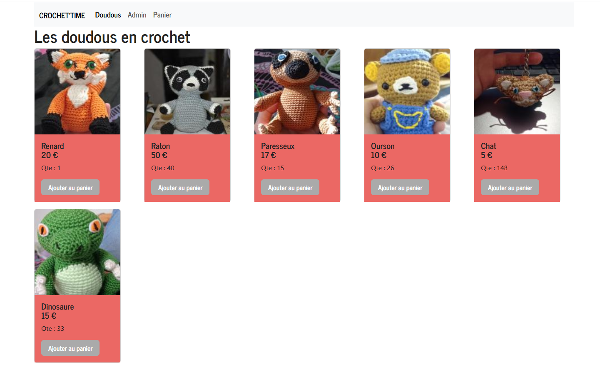
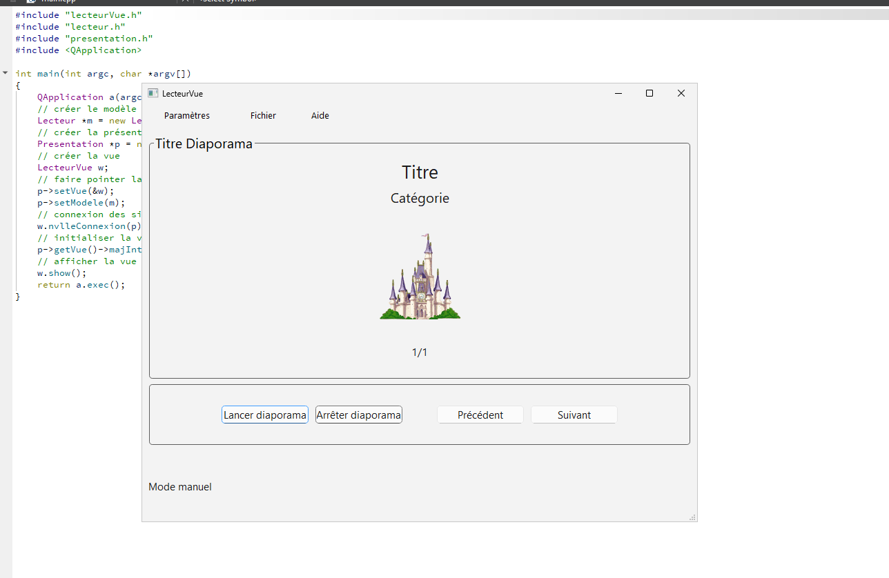
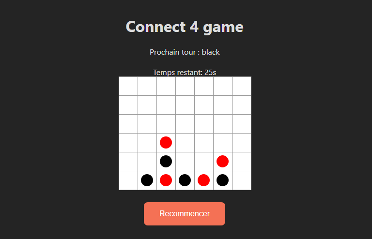

Zélie Davaud
Développeuse en alternance passionnée, toujours à la recherche de solutions innovantes et créatives.
Explorez mes projets et compétences.
En savoir plus
Développeuse en alternance passionnée, toujours à la recherche de solutions innovantes et créatives.
Explorez mes projets et compétences.
Je m'appelle Zélie Davaud et je suis actuellement en deuxième année de BUT Informatique, en alternance. Cette formule me permet de combiner mes études avec une expérience professionnelle enrichissante, où je peux appliquer mes connaissances théoriques dans des projets réels et améliorer mes compétences au contact de professionnels du secteur.
Passionnée par l'informatique et la programmation, j'ai acquis des compétences solides en développement web, gestion de bases de données, ainsi qu'en programmation orientée objet.
J'ai eu l'occasion de travailler avec des technologies comme HTML, CSS, JavaScript, React, PHP, et Python, ce qui m'a permis de renforcer mes connaissances et d'apprendre à développer des solutions efficaces et performantes.
En alternance, j'ai aussi appris à collaborer en équipe, à respecter des délais serrés et à résoudre des problèmes concrets dans des environnements de travail dynamiques. Cette expérience m’a permis d’approfondir mes compétences techniques tout en développant une compréhension plus précise des enjeux du développement logiciel dans un contexte professionnel.
Je suis constamment en quête de nouveaux défis et je souhaite continuer à progresser dans le domaine du développement pour devenir un professionnel polyvalent et capable de concevoir des solutions innovantes et adaptées aux besoins des utilisateurs.

Ce projet consiste en la création d’un site web dédié à la vente de doudous en crochet faits main, mettant en valeur l’artisanat et la personnalisation des produits.
...
Développé en PHP, HTML et JavaScript, ce site a pour but de proposer une expérience utilisateur fluide et conviviale tout en offrant une gestion efficace du contenu pour l’administrateur.
On peut donc y retrouver un catalogue interactif, un système de panier et de commandes ainsi que tout un back office administrateur afin de faciliter l’utilisation pour le vendeur.
Le site est entièrement responsive et s’adapte parfaitement aux différentes tailles d’écrans, assurant une accessibilité optimale.
Technologies utilisées :
Frontend : HTML et CSS pour la structure et le design, JavaScript pour les interactions dynamiques.
Backend : PHP pour la gestion des données et des fonctionnalités du site.
Base de données : MySQL pour stocker les informations des produits, des commandes et des utilisateurs.

Ce projet est une application de lecteur de diapositives dotée d’une interface utilisateur intuitive.
Elle est structurée selon le modèle MVP
...
(Modèle-Vue-Présentateur) pour une séparation claire des responsabilités, facilitant la maintenance et l’évolution du code.
Ce lecteur permet de manipuler des diaporamas provenant d’une base de données, ce qui rend possible une mise à jour facile du contenu sans modification directe de l’application. Les utilisateurs peuvent changer de diapositive ou passer en lecture automatique pour les voir défiler à une vitesse configurable.
Il existe 7 versions, chacune apportant des fonctionnalités supplémentaires ou des optimisations. L’utilisation de Git a permis une gestion rigoureuse de ces versions.
Technologies utilisées :
Language : C++ pour sa performance, sa flexibilité et sa capacité à gérer des applications complexes.
API : Qt pour une gestion facile des interfaces graphiques et des événements.
Base de données : MySQL pour stocker les informations des diaporamas et diapositive.

Ce projet consiste en la création d’un jeu de Puissance 4 interactif développé en React. Il s'agit d'une application web ludique conçue dans le cadre de
...
mon apprentissage du framework.
Le jeu permet à deux joueurs de s’affronter sur une grille classique du jeu. L’objectif est d’aligner quatre jetons de la même couleur horizontalement, verticalement ou en diagonale avant son adversaire.
Les fonctionnalités incluent la gestion des tours, une vérification des alignements gagnants, une possibilité de recommencer une partie sans recharger la page ainsi qu’un minuteur de quelques secondes par tour.
Ce projet m’a permis de mieux comprendre les concepts fondamentaux de React, comme la gestion des états et des props, tout en renforçant mes compétences en développement d’interfaces utilisateurs modernes et interactives.
Technologies utilisées :
Frontend : React pour la logique et la structure, CSS pour le style.
Langage : TypeScript pour un typage fort et une meilleure maintenabilité.
Outils : Node.js et npm pour la gestion du projet et des dépendances.